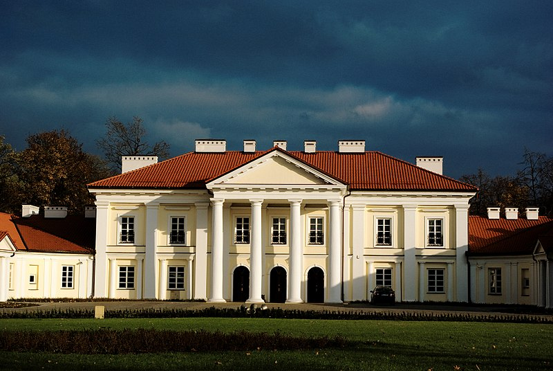

Ogiński Palace complex with the Aleksandria Park, the Holy Cross Chapel (Ogiński Chapel) and the present-day State Archive
Points of interest
Among the historic architecture of the city are:
Siedlce is a city in eastern Poland with 77,872 inhabitants (as of 2018). Situated in the Masovian Voivodeship (since 1999), previously the city was the capital of a separate Siedlce Voivodeship (1975–1998). The city is situated between two small rivers, the Muchawka and the Helenka, and lies along the European route E30, around 90 kilometres (56 mi) east of Warsaw. It is the fourth largest city of the Voivodeship, and the seat of the Roman Catholic Diocese of Siedlce. Siedlce is a local educational, cultural and business center.
| Country | Poland |
|---|---|
| Voivodeship | Masovian |
| Area | 32 km2 |
| Population | 77,872 |
| Time zone | UTC+1 |
The city, which is a part of the historical province of Lesser Poland, was most probably founded some time before the 15th century, and was first mentioned as Siedlecz in a document issued in 1448. In 1503, local nobleman Daniel Siedlecki erected a new village of the same name nearby, together with a church. In 1547 the town was granted Magdeburg rights by King Sigismund the Old. Siedlce as an urban center was created after a merger of the two neighboring villages. It was a private town, administratively located in the Lublin Voivodeship in the Lesser Poland Province of the Polish Crown. In the 16th century, and until the mid-17th century, Siedlce prospered, with its population quickly growing and a number of artisans opening their shops here.
The period of prosperity ended during the Swedish invasion of Poland (1655–1660), when Siedlce, together with most Lesser Poland's towns and cities, was burned by the Cossacks, Tatars, Muscovities, Swedes and the Transylvanians. After these conflicts, the town belonged to the Czartoryski family, as a dowry of Joanna Olędzka, who married Prince Michał Jerzy Czartoryski. In 1692 Siedlce burned again, and the destruction was used by Kazimierz Czartoryski, the son of Michał Jerzy, to plan a new, modern market square, together with adjacent streets. In the first half of the 18th century, a new parish church was built. In 1775, after Aleksandra Czartoryska married Hetman Michał Kazimierz Ogiński, the town passed over to the Ogiński family. At that time Siedlce emerged as one of the most important cultural centers of the nation. The Ogiński Palace was visited by several notable artists and writers, such as Franciszek Karpiński, and Julian Ursyn Niemcewicz. King Stanisław August Poniatowski visited the palace twice, in 1783 and 1793. Due to efforts of Aleksandra Ogińska, several improvements took place in Siedlce. Among them, a new town hall was built, which now is one of the symbols of the city.
Among the historic architecture of the city are:
The city is a cultural hub for the entire province, with festivals, exhibitions, and concerts of country-wide significance. The town has three museums and three public libraries. The principal animators of culture operating in the city are the Culture and Art Center (CKiS) and the Municipal Cultural Centre (MOK). There are two movie theatres; the art-house cinema run by the CKiS, and the multiscreen cinema Novekino network. A number of artistic groups operate in the city, including the dance companies LUZ and Caro Dance, the Choir of the City of Siedlce, and the ES Theatre. The city also has an art gallery located at the University. A painting by El Greco, "The Ecstasy of St. Francis", is preserved there. It is the only El Greco painting in Poland.
Among the media outlets which operate in this area are the local television (TV Siedlce) and the Catholic radio station Radio Podlasie. Siedlce is the location of the regional headquarters of the TVP Warsaw/TVP Info, RDC (Radio For You) and Radio Eska.